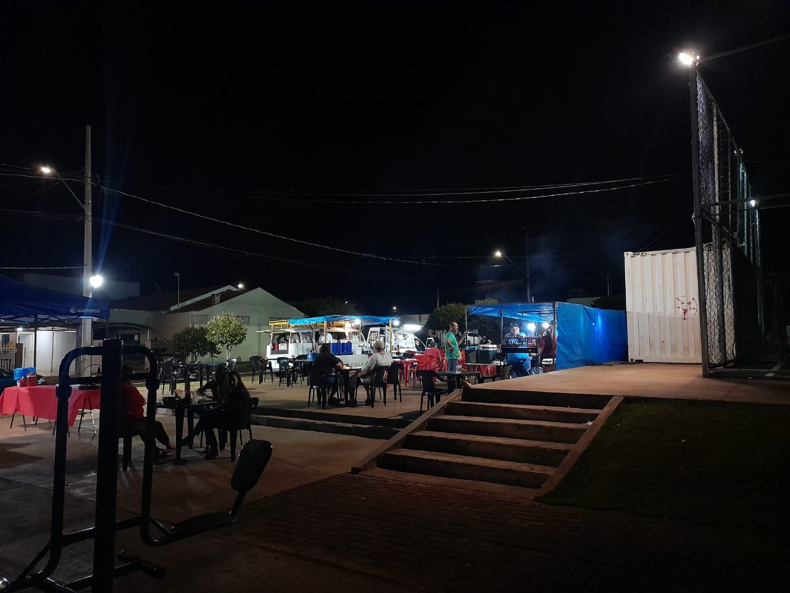

Feira Jardim Aeroporto
A Feira do Jardim Aeroporto oferece produtos frescos e artesanais diretamente dos agricultores familiares, com qualidade e preços justos.
04/07/24 Tempo Restante: 00h:30m:00s

Feira tropical 1
A Feira do Tropical 1 destaca-se por sua variedade única de produtos frescos, com qualidade e preços competitivos.
04/07/24 Tempo Restante: 02h:00m:00s